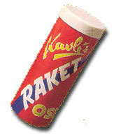
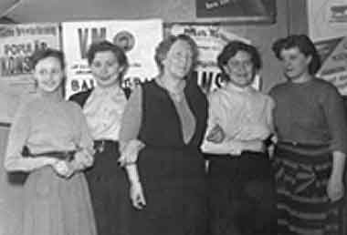
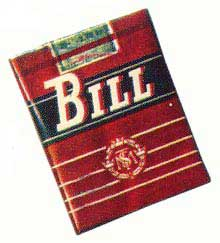

Ritz Café och 1950-talet
av Kjell Söderström
Med uppväxttid och skolgång under 1940-talet
blev 50-talet det årtionde som
kom att prägla
livet på många sätt.
1950-talet är kanske det årtionde då samhällets
utvecklingen startade med "raketfart" och en tro
på framtiden fanns trots att
Koreakriget bröt ut
direkt i inledningen.
Det hände mycket under 50-talet:
Gösta "Snoddas" Nordgren med sin Flottarkärlek,
vi minns jordskredet i
Surte, VM-brons i fotboll,
brylcremen kom medan motboken avskaffades.
Radions program 2 startade, James Dean omkommer
i en bilolycka. Sputnik flyger runt i
rymden,
Raketosten ett måste på utflykten.
| 45-timmars arbetsdag införs och musikalen West Side Story har premiär på Broadway. Filmen "Jailhouse rock" har premiär i Stockholm medan hamburgaren och LP-skivan får Sverigepremiär, Ingemar "Ingo" Johansson besegrar världsmästaren Floyd Pattersson i boxning. Coca-Colan släpps fri efter att ha varit förbjuden för att något i innehållet var farligt. |
 |
Musik:
Bill Haley med "Rock around the clock",
Elvis Presley slår igenom med dunder och brak.
Owe Törnqvists "Rotmos rock" satte fart på
dansskorna
medan lyssnandet var stillsammare till
"Que sera" med Doris Day.
Filmer:
Olle Hellboms film "Raggare" med Christina
Schollin,
"Storstads hamn"
Marlon Brando,
"Härifrån till Evigheten" Burt Lancaster och
Deborah Kerr och
"Hon dansade en sommar" Ulla
Jacobsson.
Bok:
"Dödscell 2455" Carly
Chessman
Radio:
"Frukostklubben", "Karusellen" och "Radio Luxembourg"
1950-talet är förmodligen det årtionde som behåller
sin kraft i
historien och bli en modern epok i vårt liv
med skinnknuttar och raggare i kombination av
en
stor framtidstro.
Vill jag plocka ut något att berätta om så faller tankarna
direkt på lumpen, Ritz
café, Gotan och Västerbergs folkhögskola.
Ritz Café och Konditori
Ritz Café startades år 1908 av fru Lundberg och drevs
av olika ägare fram till 1939 då den övertogs av Alma
Andersson och hennes man August.
Ritz Café den naturliga samlingsplatsen för oss då yngre
boende norr om Sundsbron
upphörde, bytte ägare och
namn 1958.
Nu är det Lennys Färg som disponerar cafélokalerna
inkl Motorcentrums lokaler som fanns i den östra delen
av byggnaden.
Vad var det för speciellt med Ritz Café ?
Skall vi börja med att förflytta oss tillbaka i tiden
– mitten/senare hälften av 1950-talet –
Ritz Café, granne med bensinstationen
Shell på den ena
sidan och Motorcentrum på den andra , alla tre efter
Hamrångevägen. På motsatta sidan fanns Konsum med
stor förrådsbyggnad i hörnet/korsningen
genomfartsvägen
(lv 272) och Hamrångevägen.
Vi går in på Ritz Café, till fru Andersson och hennes personal.

Anita, Ann-Britt, Fru Andersson, Berit och Greta, personalen år 1954.
Ytterdörren, till höger om ett av tre stora fönster som
vetter mot Hamrångevägen, är
en glasdörr där gardin
finns på glasets insida så att besökaren inte direkt kan
se in
i lokalen från utsidan/vägen. Det första som möter
en är butiken med glasdisk rakt
fram som har flera hyllor
med bakverk av olika slag , kassaapparat till vänster i
direkt
anslutning till glasdisken.
Bakom glasdisken , till vänster på motsatta väggen ,
finns dörren till köket och till
höger om dörren en
serveringslucka. Till höger om glasdisken finns en
öppning så vi kan kommer in i själva cafélokalen
med
bord och stolar till höger efter väggen som till största
delen består av ett av de
tre fönster som är mot vägen.
Direkt till vänster finns grammofonen med ett 100-tal
78-varvs skivor som står staplade
i ett skivställ från golv
till "tak". Utbudet bland skivorna är stort. Allt från tangon
"Du svarte zigenare" till "Guitar boogie" och "Rock
around
the clock" med Bill Haley fram till tiden för jukeboxen med
Elvis, Tommy och dom svenska grabbarna.
De ibland något rispiga 78-varvarna och därtill dåligt
stift
var det ändock en höjdpunkt i tillvaron när tonerna
strömmade ut ur högtalaren. Framför grammofonen ute på
golvet finns ett antal bord
med stolar.
Längs efter väggen – på kökssidan – finns
flera "bås" med
plats för 3-4 par var sida om bordet. Väggarna mot café-
lokalen är inte i takhöjd men nästan. Där båsen slutar finns
en dörr till
ytterligare ett "Caférum" in mot gården med
sluttande tak.
Detta rum är
endast öppet på lördagar o söndagar.
Vänder vi oss helt om så kommer vi in i
"damrummet"
med väggar i stil med "båsen".
I detta rum är det "finare möbler" – ljusa stolar med armstöd,
tavlor
på väggarna –. Här är det tredje fönstret mot vägen.
De fönster som finns i
själva serveringen har "lätta" gardiner
för hela fönstren. Färgen inne i lokalen är rödbrun med tak i gulbrunt.
Vi återvänder till entrédörren. Här vid entrén är
det liksom en
passage med vägg till höger och till vänster. Till vänster är
väggen
låg med någon typ av gardin på översidan som skydd
mot det som finns uppställt i
skyltfönstret som finns här.
Bakom disken är personalen som säljer direkt över disk eller
tar emot beställning
för att sedan servera ute i cafélokalen.
Har beställning skett så iordningställs "brickan" i köket där bl a
smörgåsar görs i ordning i ett rum som kallas för skafferiet.
Ett stort bord står mitt i köket.
I cafélokalen, inne i båsen och ute bland borden har
många
"lokala" experter diskuterat och gjort i ordning Svenska
fotbollslandslagets bästa laguppställning som i många fall
inte stämde med det lag som
sprang ut på Råsunda.
"Expert"kommentarer från någon ishockeymatch på
Bysjöns
is har förmodligen bitit sig fast i café atmosfären.
|
Här har mången tagit sitt första bloss på en Bill eller smuttat på något starkt i rummet mot gården. Vi som "går till" Ritz är 15-16 år och uppåt. Den första kontakten med arbetslivet fick många flickor just här på Ritz direkt efter det att "Den blomster tid nu kommer" hade sjungits ut i 7:é klassen. |
 |
Fru Andersson var den som tog hand om sina anställda
både under arbetstiden och
fritiden.
För några var det första egna boendet.
Det är något visst med Ritz Café.
Denna artikel, författad av Kjell Söderström, är
införd i Ockelbo.nu
under januari månad 2003.